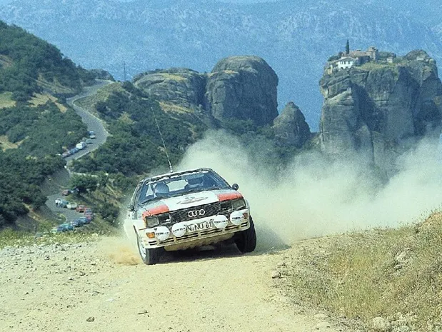
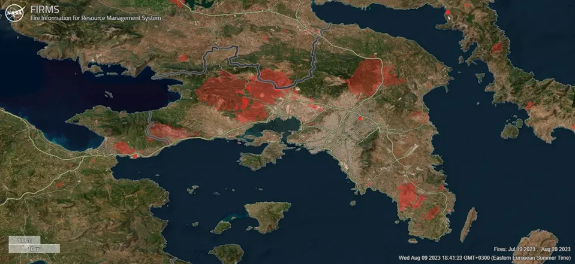
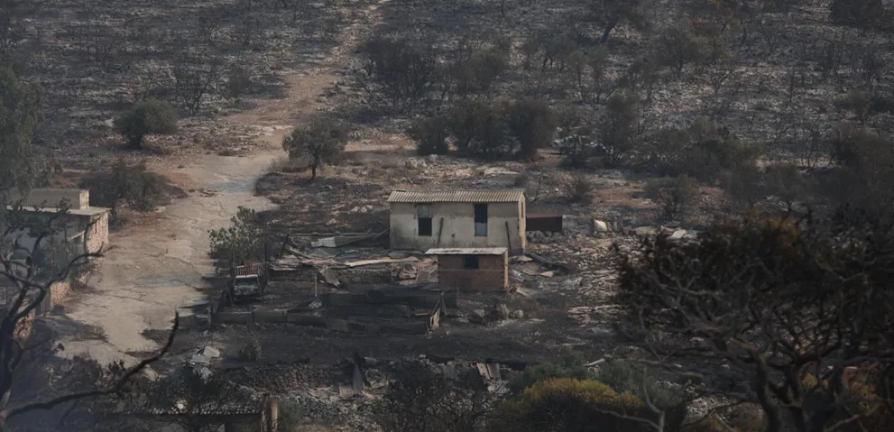
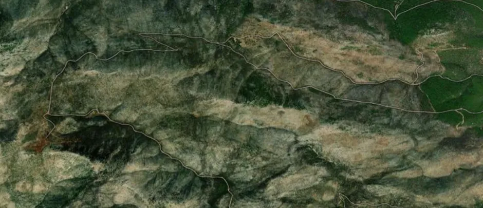
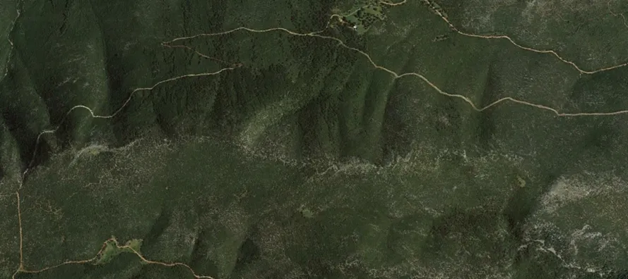
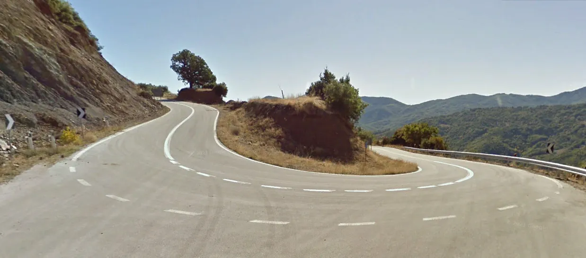
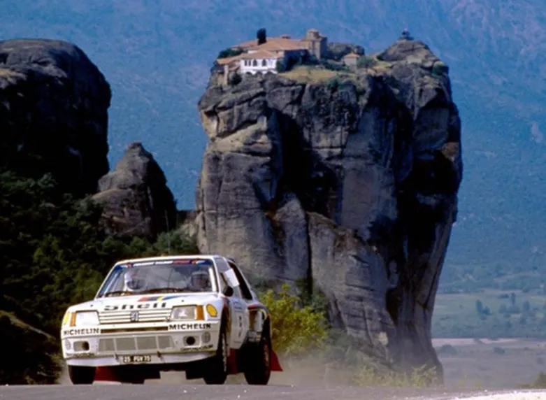

A tribute to the Acropolis stages that have been lost to time
Rally Acropolis is the next rally on the WRC calendar, and I couldn’t be more excited for it! And it’s not just because it’s my home rally. This marks the rally’s 70th anniversary, and the organisers have put together a rather special itinerary to celebrate it. Iconic stages like, Pavliani, Tarzan, Loutraki, Eleftherohori and Elatia, among others, feature on this year’s itinerary (Karoutes for the first time since 2002!). There’s many, many more stages that have left their own mark in Rally Acropolis’ long history in the world of rallying, which don’t feature this year, and haven’t featured in a while. Some’s absence is quite logical, like Bauxites, which most of it is part of the Karoutes stage, just in the opposite direction, but others, unfortunately can’t be used anymore. This post is dedicated to the Acropolis stages that have been lost and can’t be used anymore.

There are many different reasons why some of the stages that were used in the past can’t be used today. A big reason why some recent ones can’t be used, is because of fires. The Attica region has been plagued by fires, more than ever in recent years, and that has had its impact on some stages.

This map shows the areas that were impacted by fires from 2018 to 2023 in the Attica Region.
As recently as 2008, many Acropolis stages were in the Attica region, but a great deal of them have been lost to fires. Stages like Agia Sotira, Mandra, Pateras and many others can’t be used anymore because they were burnt down. Some of you might think, why can’t they be used, the scenery would be bad yes, but the roads are still the same, so what’s the problem? Well, the problem is, burnt down areas, are a very sad sight to look at, and neither the organisers, nor the promoter want people to have to look at burnt down forests, it's just not appropriate for rally stages to be held, where 500m away, someone’s house has burnt down. On the other hand, the road surface doesn’t stay the same either.

The stages that are burnt, tend to turn into rockeries, completely absent from gravel, or just completely destroyed, with them being full of debris, rutted roads etc. And the fires haven’t only claimed stages in Attica. The 2018 fires in Kineta have also impacted some stages. The start of the Kineta stage was burnt down, and the stage hasn’t been used since. More recently, a fire near Loutraki last month burnt down the old shakedown stage that was used in 2015. That stage is really close to the 2023 Loutraki stage, so it won’t be a pretty sight for the people that go to the stage this year.


The area around the Mandra/Agia Sotira stage. The top picture is how it looks in 2023, the bottom one is how it used to look in 2016.
But fires aren’t the only reason why gravel stages get lost through time. We must not forget that rallies are held on public roads, used by local people every day. Understandably, people are not fond of having to get 4x4 to get from point A to point B, so many stages have been paved over the years. Stages that are now asphalt include, parts of the old Tarzan, Grammeni Oxia, Prodromos, Hani Zagana and Gardiki to name a few. Most of the stages used before 1995 have been paved, or atleast parts of them have been paved.

The start of the old Tarzan stage now (Redina-Tarzan)
These roads would make a killer tarmac rally though I must admit, and some feature on the tarmac version of Rally Fthiotidos that is held in the area south of Lamia.
To end this post, I would like to give a special mention to many of the stages that can’t be used because of where the rally is held nowadays. From 2009 to 2015, the rally had stages in Corinth, which were really good. For example, Ziria was a favourite of mine. These stages can’t really be used nowadays, because the rally’s HQ is in Lamia, and Loutraki is as south as I can see the rally going for now. The liaison sections are already long enough, too long for some.
Rally Acropolis in the past used to go all the way down from Sparti, on the bottom of the Peloponnese all the way up to Elassona, at the Northernmost point of Thessaly, so as you can understand the majority of those stages are also off the cards, and most of them don’t exist anymore anyways. I would like to give a final special mention the the Meteora stage last used in 1985, where the cars went past the famous Meteora rocks that have orthodox monasteries, giving us some of the best pictures ever taken from Rally Acropolis.

Here's to another 70 years of Rally Acropolis, see you on the stages in September !
By Dimitris Theodorou
All pics are from the Red Bull Content Pool


Comments